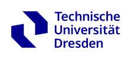

Technische Universität Dresden — Fachgebiet Energieeffizienz · Oktober 2022Die Technische Universität Dresden — TU Dresden — ist eine der ältesten und renommiertesten technischen Universitäten Deutschlands, gegründet 1828. Das Fachgebiet Energieeffizienz testete die SunWave Ceramica im Oktober 2022 nach DIN EN IEC 60675-3, der europäischen und internationalen Norm, die festlegt, wie die Strahlungseffizienz von Infrarotheizgeräten gemessen und ausgewiesen wird.
Das Marketing der meisten Infrarotpaneele stützt sich auf vage Behauptungen über „Ferninfrarot" oder „gesunde Wellenlängen". Der TU-Dresden-Test ersetzt Marketingsprache durch gemessene Daten. Dieser Artikel erklärt jede einzelne Zahl im Bericht.
Was ist DIN EN IEC 60675-3?
IEC 60675 ist die Normenreihe der Internationalen Elektrotechnischen Kommission für Haushaltsgeräte und ähnliche elektrische Geräte — speziell zur Messung der Leistung elektrischer Strahlungsheizgeräte und zugehöriger Ausrüstung. Teil 3, in Europa als DIN EN IEC 60675-3 übernommen, gilt speziell für Infrarotheizgeräte und legt fest:
- wie die Strahlungseffizienz zu messen ist (Abmessungen der Prüfkammer, Messpunkte, Temperaturbedingungen),
- wie das Verhältnis von abgestrahlter Leistung zu gesamter elektrischer Eingangsleistung berechnet wird,
- wie die spektrale Emission charakterisiert wird (die Wellenlänge, bei der das Paneel strahlt),
- welche Angaben für Konformitätsaussagen erforderlich sind.
Die Norm existiert genau deshalb, weil informelle Aussagen über Infrarotpaneele kaum vergleichbar sind. Indem sie Messungen auf ein festgelegtes Protokoll verpflichtet, ermöglicht DIN EN IEC 60675-3 den direkten Vergleich zwischen Produkten sowie zwischen Herstellerangaben und Laborrealität.
Die wichtigsten Ergebnisse der TU Dresden
TU-Dresden-Testergebnisse — SunWave Ceramica · Oktober 2022
Was bedeutet „maximale Wellenlänge 8,52 µm"?
Jeder warme Körper strahlt Infrarotstrahlung ab. Die Wellenlänge, bei der die Abstrahlung am stärksten ist, hängt von seiner Temperatur ab — beschrieben durch das Wiensche Verschiebungsgesetz:
wobei b = 2'898 µm·K (Wiensche Verschiebungskonstante)
und T = absolute Temperatur in Kelvin
Bei T = 340 K (67 °C):
λ_peak = 2'898 / 340 = 8,52 µm
Die SunWave Ceramica arbeitet bei einer Oberflächentemperatur von etwa 67 °C — und bei dieser Temperatur sagt das Wiensche Gesetz eine maximale Emissionswellenlänge von exakt 8,52 µm voraus. Die Messung der TU Dresden bestätigte genau diese Vorhersage.
Warum 8,52 µm wichtig ist
Das Infrarotspektrum gliedert sich in Nahinfrarot (0,75–1,4 µm), kurzwelliges IR (1,4–3 µm), mittelwelliges IR (3–8 µm) und langwelliges IR (8–15 µm). Der menschliche Körper nimmt Infrarotstrahlung im Bereich von 8–14 µm am effizientesten auf und strahlt sie wieder ab — manchmal als „Wohlfühlband des Menschen" bezeichnet.
Mit 8,52 µm strahlt die SunWave Ceramica genau in diesem langwelligen Band. Das bedeutet, die Strahlung wird direkt von Personen und Gebäudeoberflächen aufgenommen, statt sie zu durchdringen (Risiko bei Nahinfrarot) oder lediglich die Luft zu erwärmen (konvektive Systeme). Das Ergebnis ist eine direkte Kopplung zwischen der Abstrahlung des Paneels und der menschlichen Wärmewahrnehmung.
Kurzwellige Infrarotstrahler (Quarzröhren, Halogenstrahler) emittieren bei 1–3 µm und können aus der Nähe Unbehagen oder Hautschäden verursachen. Langwellige Keramikpaneele bei 8,52 µm strahlen im selben Band wie die menschliche Haut — also bei „Körpertemperatur-Wellenlängen" — und stellen kein photobiologisches Risiko dar.
Strahlungseffizienz verstehen
Die Strahlungseffizienz ist das Verhältnis von Energie, die als elektromagnetische Strahlung (Infrarot) abgegeben wird, zur gesamten elektrischen Eingangsleistung. Die übrige Energie wird als Konvektion abgegeben (warme Luft, die von der Paneeloberfläche aufsteigt).
Der TU-Dresden-Test bestätigt zusammen mit der BSRIA-Analyse des Wärmeübertragungsverhältnisses, dass die SunWave Ceramica 80 % ihrer Energie als Strahlung und 20 % als Konvektion abgibt — weshalb BSRIA zu dem Schluss kam, dass sie bis zu 80 % weniger Energie verbraucht als A+++-Konvektionsheizungen. Warum dieses Verhältnis wichtig ist:
- Konvektive Wärme erwärmt Luft → die Luft steigt auf → Wärme entweicht über Lüftung und Undichtigkeiten
- Strahlungswärme erwärmt Oberflächen und Körper direkt → Oberflächen strahlen die Wärme zurück und speichern sie → weniger Wärmeverlust über die Lüftung
In einem modernen Schweizer Gebäude mit obligatorischer kontrollierter Lüftung (MINERGIE-Standard oder ähnlich) geht konvektive Wärme fortlaufend über das Lüftungssystem verloren. Strahlungswärme hingegen wird von der Gebäudemasse aufgenommen und über Stunden wieder abgegeben — was den fortlaufenden Energiebedarf zur Aufrechterhaltung des Komforts drastisch reduziert.
Wie sich der TU-Dresden-Test von Marketingaussagen unterscheidet
Viele Hersteller von Infrarotpaneelen behaupten „90 % Strahlungseffizienz" oder „Ferninfrarot"-Emission, ohne sich auf eine Norm oder ein Prüfprotokoll zu berufen. Der Unterschied zwischen einer Marketingaussage und einem Ergebnis nach DIN EN IEC 60675-3:
- Marketingaussage: vom Hersteller unter nicht spezifizierten Bedingungen gemessen, nicht reproduzierbar
- DIN EN IEC 60675-3: genormte Prüfkammer, festgelegte Messpositionen, unabhängiges akkreditiertes Labor, reproduzierbares Protokoll
Das Ergebnis der TU Dresden ist die einzige Möglichkeit, einen verifizierbaren Vergleich zwischen der SunWave Ceramica und konkurrierenden Produkten zu ziehen — und die Grundlage, auf der Architekten, Energieberater und Einkaufsteams Aussagen zu Infrarotheizungen bewerten sollten.
Der Zusammenhang mit den 66 % Energieersparnis
Die Bestätigung der Strahlungseffizienz und die Messung der maximalen Wellenlänge durch die TU Dresden liefern den physikalischen Mechanismus, der das Ergebnis der unabhängigen akademischen Forschung erklärt (66 % weniger Energie als Gas). Die Argumentationskette:
- 80 % Strahlungsanteil (BSRIA-Wärmeübertragungsverhältnis) bedeutet, dass der Grossteil der Energie an Oberflächen statt an die Luft geht — daraus resultiert ein bis zu 80 % geringerer Verbrauch gegenüber A+++-Konvektionsheizungen
- Das Maximum bei 8,52 µm (TU Dresden) bedeutet optimale Kopplung an die menschlichen Wärmerezeptoren
- Geringere Lufttemperatur für gleiches Wärmeempfinden nötig (Effekt der mittleren Strahlungstemperatur)
- Geringere Lufttemperatur → weniger Wärmeverlust über Lüftung und Gebäudehülle → geringerer Energiebedarf
- Ergebnis: 71,21 kWh/m²·Jahr gegenüber 212 kWh/m²·Jahr bei Gas (unabhängige akademische Forschung — Infrarottechnologie) → 66 % Ersparnis
Der TU-Dresden-Test steht nicht für sich allein — er ist ein Baustein einer vollständigen, unabhängig verifizierten wissenschaftlichen Erklärung dafür, warum keramische Infrarotheizung Energie spart.
Lesen Sie alle fünf unabhängigen Prüfberichte
BSRIA · TU Dresden · Fraunhofer WKI · Labor S.A. — alle Details zu jeder Studie.
Zur Forschungsseite